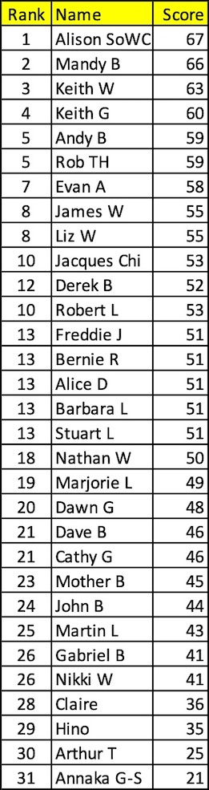

Competion Time!
Can You Beat Brian the Psychic Hedehog? - Yes It's Winter and He Has Hibernated - Go On You Know You Want To!
Leader Board
Match Day Eight Predictions

Match Day Eight Predictions
Predictions and Leaders
Japan 0 - Costa Rica 1. Costa Rica had one shot and it was all they needed!
Belgium 0 - Morocco 2. Shocker!
Croatia 4 - Canada 1.
Spain 1 - Germany 1. Gosh.
Stuart L Keeps a Firm Grip on His Trophy
Match Day 8
Fascinating day of football today. Can Spain keep up their form against Germany? Japan v Costa Rica who knows. Will Belgium bring their A game against Morocco. There may be more draws than the convent laundry.
Gosh it is tight at the top. Keith W squeezes back in front but he is being chased and their is a lot of unpredictable football to play today.
A special good luck shout today to Annaka GS bravely propping up the table - Here's hoping you get the full 12 points.
Good luck and enjoy!